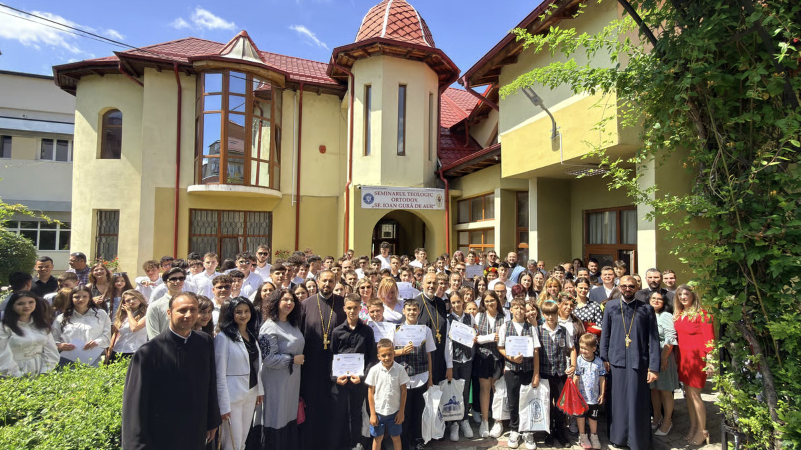

Eveniment
Eveniment
Arhiepiscopia Târgoviștei
De peste 30 de ani în slujba Bisericii și a Educației, în inima cetății Târgoviștei.
Bine ați venit
Seminarul Teologic Ortodox „Sfântul Ioan Gură de Aur" formează tineri în specializarea Teologie Pastorală, îmbinând rigoarea academică cu viața duhovnicească și deschiderea europeană prin programul Erasmus+.
„Dacă-ți iubești copilul, arat-o prin educația pe care i-o dai!"
Viața seminarului →Din viața seminarului
Eveniment Cultural
Cultural Erasmus+
Erasmus+ Performanță
Performanță Educație
Educație Concurs
ConcursExplorează
Apasă pe o zonă pentru a afla informații și a ajunge direct la departamentul dorit.
Inima duhovnicească a seminarului, unde elevii participă la slujbe și la viața liturgică zilnică.
Mergi la secțiune →Corpul profesoral
Preoți profesori și cadre didactice care îmbină competența academică cu îndrumarea duhovnicească.
Date demonstrative — profilele reale vor fi gestionate din CMS.
Admitere 2026–2027
Înscrierile pentru clasa a IX-a, specializarea Teologie Pastorală, sunt deschise. Descoperă criteriile, calendarul și actele necesare.